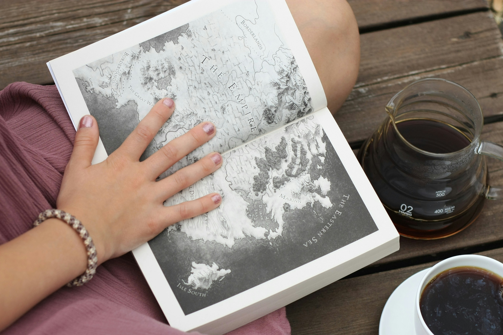
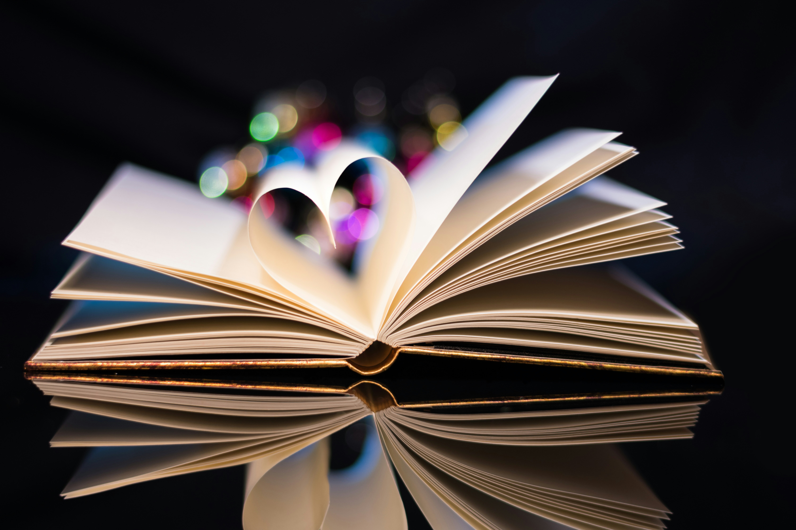

What I Read
My favorite genres currently are romantasy, romantic fantasies, and psychological thrillers. Some of my favorite authors currently are Geneva Lee and Frieda McFadden. Lee writes romantasies, some examples are the Filthy Rich Fae series and Filthy Rich Vampire series. McFadden writes thrillers, just not extremely heavy thrillers. I use Mcfadden's books as a sort of palate cleanser after a heavier book or if I just need a break from romance books. I do enjoy other stand-alone books by other authors, one of my favorite thrillers this year was Hidden Pictures by Jason Rekulak.
Links to Geneva Lee, Frieda McFadden, and Hidden Pictures
Why Fiction?
I am still new to romantasy, but I have always enjoyed fantasy or sci-fi books. In middle school, I started reading the Monument 14 trilogy by Emmy Laybourne, then onto Percy Jackson, Maze Runner, Scythe, etc. I believe reading these books started a love for fiction and worlds completely different than our own. Sure, tv shows and such can give a visual representation of a fantasy world, but reading the words and imagining it all for yourself is a completely different area. Good authors with good descriptors makes immersing yourself into a book all that more enjoyable. I choose fiction over non-fiction in books because of that, it is easier for me to learn about history through shorter articles compared to a 500 page book.
